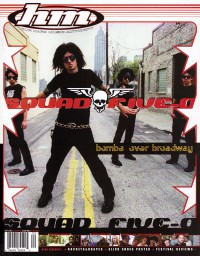

CMnexus
:
Contemporary Christian culture, music, and media.
Magazines
Profiles
Dove Awards
cmnexus.org
CM
nexus
→
Profiles
→
S
Squad 5-0
On the cover

September 2000
HM
Media coverage:
Jul 1997 in
CCM
"Catch The Wave", by
Dave Urbanski
Sum 1997 in
Garlic Press
"Interview: Squad 5-0"
Sep 1997 in
HM
"Squad 5-0", by
Brian Vincent McGovern
Jul 1998 in
HM
"Look What The '90s Dragged In", by
Brian Vincent McGovern
Win 1999 in
FUEL
"It's A Snotty, Rockin' Metal Kind of Thing", by
Cliffy Huntington
Jul 2000 in
7ball
"Fishers of Men", by
Kyle Minor
Sep 2000 in
HM
"Rocking The Apocalypse", by
Treble Bandoppler
Mar 2002 in
HM
"Time To Show", by
Tim McCready
Jul 2003 in
HM
"Hardnews: Squad 5-0"
May 2004 in
HM
"Squad 5-0", by
Doug Van Pelt
Albums & reviews:
1997
:
What I Believe
Jul 1997 in
7ball
, by
Chad Bonham
Sum 1997 in
Garlic Press
Jul 1997 in
HM
, by
Brian Vincent McGovern
Sep 1997 in
YouthWorker
, by
Ty Chap Houge
1998
:
Fight the System
Jul 1998 in
FUEL
, by
Jamie Lee Rake
Jul 1998 in
HM
, by
Doug Van Pelt
2000
:
Bombs over Broadway
Nov 2000 in
CCM
, by
Steve Knight
Nov 2000 in
HM
, by
Kern County Kid
2002
:
Squad 5-0
Mar 2002 in
CCM
, by
Shawn Hendricks
Mar 2002 in
YouthWorker
, by
Dave Urbanski
Mar 2002 in
HM
, by
Steven Douglas Losey
Mar 2002 in
CCM
, by
Shawn Hendricks
2004
:
Late News Breaking
Jul 2004 in
HM
, by
James Wertz
Jul 2004 in
Relevant
, by
Lycia Shrum
Books about Squad 5-0
"
Squad Five-O
" in
The Encyclopedia of Contemporary Christian Music
(
Mark Allan Powell
,
2002
).
CMnexus
(noun)
The magazine index
of modern music
and Christianity
© 2011 CMnexus. Last updated May 2025.
Contact:
Rants and other correspondence to:
editor -AT- cmnexus
-DØT- org
About